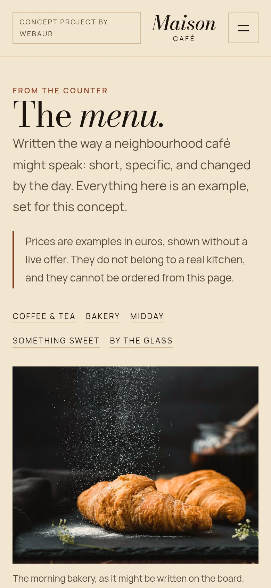
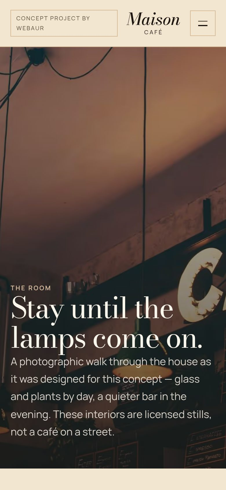
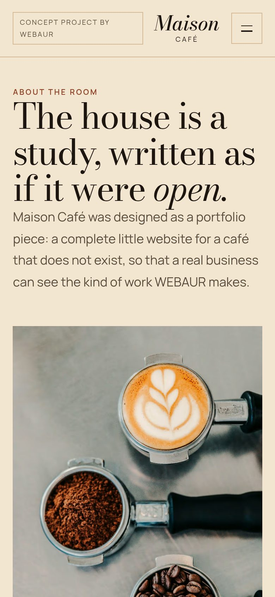
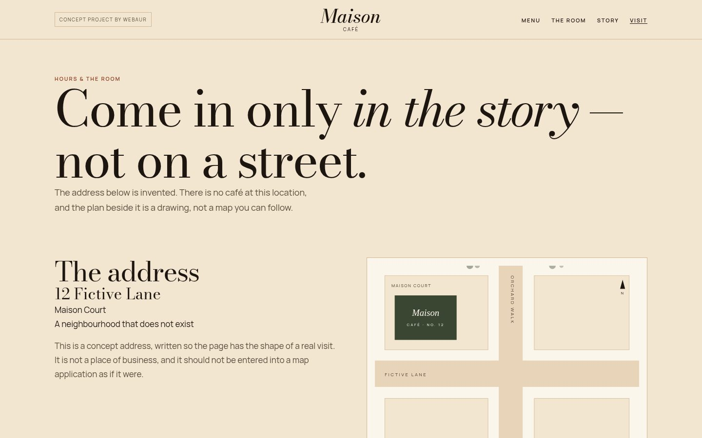
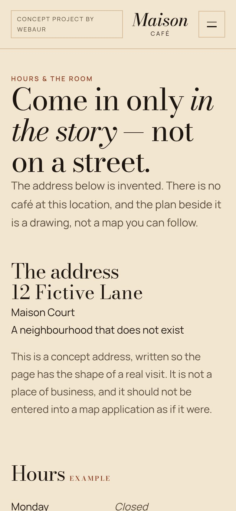

Home
A quiet table.
A conservatory table and a short invitation. The opening is photographic and typographic, closer to a publication than a takeaway site.


Work / Maison Café
Concept project
A five-page café concept on parchment, bottle green and copper. The site is built like a short publication: a table, a menu with food photography, a room study, a story, and a visit page that admits it lives only in the story.
To design a complete café site with its own identity, a readable list, a sense of place, and a visit path that does not invent reservations.
To show how WEBAUR would approach hospitality: typography, photography and rhythm, without turning the café into a templated front.
An independent café or small restaurant that wants a site as warm as the room — slower and more considered than a takeaway list.
This is a concept project. It is not a paying client’s website, and it does not invent customers, reviews or results.
Maison
CAFÉ
Bodoni ModaA quiet table.The same self-hosted face as the live demo.
ManropePastry, coffee and a room that holds the afternoon.Self-hosted Manrope, as on the live demo.
Maison Café
A quiet table.
A conservatory table and a short invitation. The opening is photographic and typographic, closer to a publication than a takeaway site.


The list.
Coffee, pastry and plates as an editorial list, with food photography sitting beside the prices — not a title slide and a plant. The prices are concept examples, not a living kitchen’s menu.
Stay until the lamps come on.
An atmosphere page: evening lamps, the conservatory table, the taller green room. It is a designed interior, labelled as licensed stills, not a café on a street.




The house is a study.
A longer text about the house and the room. It is written as atmosphere, and it does not invent a founding year or a family history as fact.
Come in only in the story.
Hours and an invitation, stated plainly: this is a story, not a street address you can walk to. A table cannot be reserved.


The visit page is direct: you come in only in the story, not on the street. A table cannot be booked.
Bodoni Moda gives the name and headlines a printed quality; Manrope keeps the list and the story pleasant to read. Copper is used like warm metal, not a neon accent.
Dishes are set in a spacious list, not a cramped card grid. Photographs support the list rather than replacing it.
A real café would publish a real address and a real booking path. This concept keeps the invitation and says that it is fictional.
Start a project
Tell us about your business and what you would like to improve. We’ll take it from there.